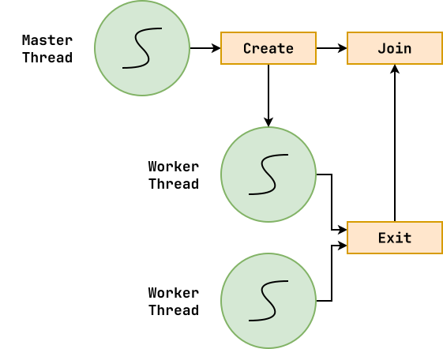
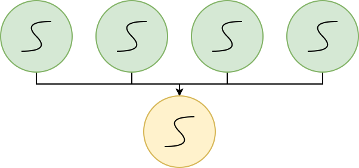
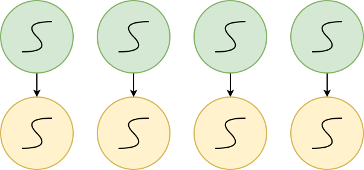
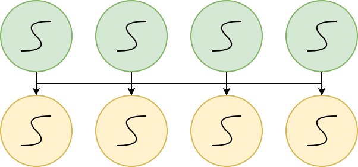

Logistics¶
-
Exam 01: Check grades on Canvas, one week to make any corrections.
-
Project 02: pub/sub library,
libcurlfor HTTP requests, chat application
Review¶
-
What is the difference between concurrency and parallelism?
-
What are the challenges in concurrency?
Motivation¶
We want to create an application, counter, that does the following:
-
Periodically increments a
counter. -
Provides a shell prompt that allows the user to enter in a
command:
| Command | Description |
|---|---|
| count | Returns the current value of counter |
| reset | Resets counter to 0 |
| exit | Quit program |
Events: Overview¶
If we only need to overlap I/O and computation, we can use events to provide concurrency without parallelism:
-
Register interest in events (callbacks).
-
Event loop waits for event and then invokes handlers.
-
Handlers generally short-lived and not pre-empted.

Events: counter.c¶
int main(int argc, char *argv[]) {
bool prompt = true;
int counter = 0;
char buffer[BUFSIZ];
while (true) {
/* Display prompt */
if (prompt) {
fputs(PROMPT, stdout); fflush(stdout); prompt = false;
}
/* TODO: Poll STDIN */
struct pollfd pfd = {STDIN_FILENO, POLLIN|POLLPRI, 0};
int result = poll(&pfd, 1, TIMEOUT);
/* Process event */
if (result < 0) { /* TODO: Error */
fprintf(stderr, "Unable to poll: %s\n", strerror(errno));
} else if (result == 0) { /* TODO: Update counter */
counter++;
} else { /* TODO: Handle command */
if (!fgets(buffer, BUFSIZ, stdin)) {
break;
}
buffer[strlen(buffer) - 1] = 0;
if (strcmp(buffer, "count") == 0) {
fprintf(stdout, "Counter is %d\n", counter);
} else if (strcmp(buffer, "reset") == 0) {
counter = 0;
fputs("Counter is reset!\n", stdout);
} else if (strcmp(buffer, "exit") == 0) {
fputs("Bye!\n", stdout);
break;
} else {
fprintf(stderr, "Unknown command: %s\n", buffer);
}
prompt = true;
}
}
return 0;
}
$ yes count > input
$ ./counter < input
-
DDOS!!!
-
Handlers should be short-lived.
-
Concurrency, but no parallelism.
Events vs Threads¶
| Pros | Cons | |
|---|---|---|
| Events | Efficient concurrency | DOS, No Parallelism |
| Threads | Parallelism | Complicated, Tricky |
Threads: Overview¶
On Unix (or Unix-like) systems, we can implement thread-based concurrency by using the POSIX, which defines functions for:
-
Creating new threads
-
Waiting on threads
-
Locking shared resources
-
Notifying other thread

Threads: Analogs¶
| Action | Process | Thread |
|---|---|---|
| Create new task | fork + exec | pthread_create |
| Wait for task | wait / waitpid | pthread_join |
| Lock critical section | sigprocmask SIG_BLOCK/SIG_UNBLOCK |
pthread_mutex_lock pthread_mutex_unlock |
| Notify another task | sigaction / signal kill |
pthread_cond_wait pthread_cond_signal |
Project 01: There is a race condition possible with signals.
Threads: Many-to-One¶
- Portable, flexible, straightforward to implement
- No parallelism
- A thread that blocks, blocks everyone in that process

Threads: One-to-One¶
- Parallelism: Can take advantage of extra hardware resources.
- One thread blocking does not prevent other threads in process from running.
-
Limits our scalability: resources ... memory usage of stack.
-
Limits our scalability: algorithmic ... linear search in
queue_remove. -
Discuss: Why is
forkbomb really bad? (Denial of service)

Threads: Many-to-Many¶
- Scalability
- Custom scheduling / flexibility
- Complex: really hard to get right

Threads: counter.c¶
/* Globals */
int Counter = 0;
pthread_mutex_t Lock = PTHREAD_MUTEX_INITIALIZER;
/* Functions */
void *update_counter(void *arg) { // Background thread
while (true) { // Version 0: Just count (no loop)
usleep(TIMEOUT * 1000);
pthread_mutex_lock(&Lock); // Version 1: No lock
Counter += 1;
pthread_mutex_unlock(&Lock);
}
return NULL;
}
/* Main execution */
int main(int argc, char *argv[]) {
// Background Thread - Update Loop
pthread_t thread;
pthread_create(&thread, NULL, update_counter, 0);
// Foreground Thread - I/O Loop
while (true) {
char buffer[BUFSIZ];
// Display prompt
fputs(PROMPT, stdout); fflush(stdout);
// Read input
if (!fgets(buffer, BUFSIZ, stdin)) {
break;
}
buffer[strlen(buffer) - 1] = 0;
// Process input
if (strcmp(buffer, "count") == 0) {
pthread_mutex_lock(&Lock); // Version 1: No locks
fprintf(stdout, "Counter is %d\n", Counter);
pthread_mutex_unlock(&Lock);
} else if (strcmp(buffer, "reset") == 0) {
pthread_mutex_lock(&Lock); // Version 1: No locks
Counter = 0;
pthread_mutex_unlock(&Lock);
fputs("Counter is reset!\n", stdout);
} else if (strcmp(buffer, "exit") == 0) {
fputs("Bye!\n", stdout);
break;
} else {
fprintf(stderr, "Unknown command: %s\n", buffer);
}
}
return 0;
}
Notes:
#include <pthread.h>man pthread_create- Add
-pthreadtoMakefile - Try with big input (ie.
yes count > input)
Questions:
- Why didn't I need to create a foreground thread? main
- What happens if main thread dies? everything dies
- Is it correct? What is dangerous? race condition